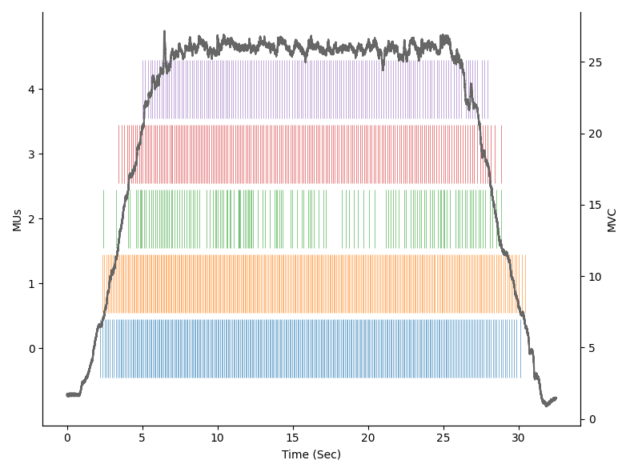

Quick-Start
Let's implement together, step-by-step, a script to analyse all the relevant motor units' (MUs) properties.
In particular, we will go through:
- Install opendemg
- Load a file
- Visualise the content of the file
- Edit the reference signal
- Remove unwanted MUs
- Analyse fundamental MUs properties
- Save the edited file and the results of the analysis
1. Install¶
openhdemg can be easily installed using pip:
or conda:
Once the installation of openhdemg is succesfull, you can install all the required packages from the reqirements.txt file.
2. Load a file¶
Before calling the functions contained in the openhdemg library, we need to import it. This can be done as:
Great, we are now ready to exploit all the functionalities of the library!
In this example, we will use the sample file provided with openhdemg.
This can be simply loaded calling the function emg_from_samplefile.
# Import the library with the short name 'emg'
import openhdemg.library as emg
# Load the sample file
emgfile = emg.emg_from_samplefile()
emgfile is organised as a Python dictionary and contains different elements (which are labelled by keys).
For a full list of keys contained in the emgfile refer to the openfiles documentation.
Each element in the emgfile can be accessed as emgfile["element"].
So, if we want to access, for example, the reference signal, we can use emgfile["REF_SIGNAL"].
3. Visualise the content of the file¶
Now that we loaded the emgfile, we can inspect its content.
As we said above, there are different elements in the emgfile and we can visualise both their type and their content with 2 lines of code:
# Import the library with the short name 'emg'
import openhdemg.library as emg
# Load the sample file
emgfile = emg.emg_from_samplefile()
# Print type
print(type(emgfile["REF_SIGNAL"]))
# Print content
print(emgfile["REF_SIGNAL"])
""" Output
<class 'pandas.core.frame.DataFrame'>
0
0 -0.159466
1 -0.139630
2 -0.099957
3 -0.080121
4 -0.060284
... ...
66555 -0.337994
66556 -0.318158
66557 -0.298321
66558 -0.318158
66559 -0.318158
"""
As you can see from the printed output, the reference signal is contained in a pandas DataFrame with 1 column (column 0).
This is an extremely important information if you want to manipulate the content of the emgfile although it is outside the scope of this Quick-Start tutorial.
Apart from accessing the numerical values, we can also plot them.
In this case we are interested in visualising the MUs firing times together with the reference signal. This can be done with the function plot_mupulses.
# Import the library with the short name 'emg'
import openhdemg.library as emg
# Load the sample file
emgfile = emg.emg_from_samplefile()
# Plot MUs firing times and ref signal
emg.plot_mupulses(emgfile=emgfile)

Looks good, but I would rather have the MUs ordered by recruitment order and also with thinner lines!
We can do that with the function sort_mus and changing the parameters in plot_mupulses.
# Import the library with the short name 'emg'
import openhdemg.library as emg
# Load the sample file
emgfile = emg.emg_from_samplefile()
# Sort MUs based on recruitment order
emgfile = emg.sort_mus(emgfile=emgfile)
# Plot MUs firing times and ref signal
emg.plot_mupulses(emgfile=emgfile, linewidths=0.4)

Are you curious about the dicharge rate of the MUs? You can view that with the function plot_idr.
# Import the library with the short name 'emg'
import openhdemg.library as emg
# Load the sample file
emgfile = emg.emg_from_samplefile()
# Sort MUs based on recruitment order
emgfile = emg.sort_mus(emgfile=emgfile)
# Plot MUs instantaneous discharge rate
emg.plot_idr(emgfile=emgfile)
4. Edit the reference signal¶
The MUs look quite good; however, the reference signal is a bit noisy and the offset is not to 0.
The noise can be removed filtering the reference signal with the function filter_refsig that, by default, applies a 4th order, zero-lag, low-pass Butterworth filter with a cutoff frequency of 15 Hz.
Instead, the offset can be removed with the function remove_offset that automatically detects the offset based on a number of samples at the beginning of the recording.
# Import the library with the short name 'emg'
import openhdemg.library as emg
# Load the sample file
emgfile = emg.emg_from_samplefile()
# Sort MUs based on recruitment order
emgfile = emg.sort_mus(emgfile=emgfile)
# Filter the ref signal
emgfile = emg.filter_refsig(emgfile=emgfile)
# Remove the offset based on the first 1024 samples (that corresponds to 0.5
# seconds when sampling the signal at 2048 Hz).
emgfile = emg.remove_offset(emgfile=emgfile, auto=1024)
# Plot MUs instantaneous discharge rate
emg.plot_idr(emgfile=emgfile)
5. Remove unwanted MUs¶
There might be cases in which we need to remove one or more MUs from our emgfile.
From the visual inspection of our plots, we can see that the firings pattern of MU number 2 (remember, Python is in base 0!!!) is not really regular. We might therefore have doubts about its quality.
A way to assess the quality of the MUs is to look at the separation between the signal and the noise. This is efficiently measured by accuracy scores.
This score is automatically calculated while importing the emgfile and can be easily accessed as emgfile["ACCURACY"]. In our sample file, the accuracy is calculated by the Silhouette (SIL) score (Negro 2016).
# Import the library with the short name 'emg'
import openhdemg.library as emg
# Load the sample file
emgfile = emg.emg_from_samplefile()
# Print the SIL score
print(emgfile["ACCURACY"])
"""Output
0
0 0.899082
1 0.919601
2 0.879079
3 0.917190
4 0.955819
"""
Our suspicion was right, MU number 2 has the lowest accuracy score.
In order to remove this MU, we can use the function delete_mus.
# Import the library with the short name 'emg'
import openhdemg.library as emg
# Load the sample file
emgfile = emg.emg_from_samplefile()
# Sort MUs based on recruitment order
emgfile = emg.sort_mus(emgfile=emgfile)
# Filter the ref signal
emgfile = emg.filter_refsig(emgfile=emgfile)
# Remove the offset based on the first 1024 samples (that corresponds to 0.5
# seconds when sampling the signal at 2048 Hz).
emgfile = emg.remove_offset(emgfile=emgfile, auto=1024)
# Remove MU number 2
emgfile = emg.delete_mus(emgfile=emgfile, munumber=2)
# Plot MUs instantaneous discharge rate
emg.plot_idr(emgfile=emgfile)
6. Analyse fundamental MUs properties¶
Now that we removed the unwanted MUs and adjusted the reference signal, we can proceed with the analysis of some fundamental MUs properties like the thresholds of recruitment and derecruitment and the discharge rate.
In the past, this used to require many lines of code, but thanks to openhdemg, we can now do that with 1 line of code using the function basic_mus_properties.
After calling the function basic_mus_properties, the user will be asked to select the start and the end of the steady-state phase. This can be done positioning the mouse on the desired point and then pressing a keybord key (such as 'a'). To remove points, right click with your mouse.
# Import the library with the short name 'emg'
import openhdemg.library as emg
# Load the sample file
emgfile = emg.emg_from_samplefile()
# Sort MUs based on recruitment order
emgfile = emg.sort_mus(emgfile=emgfile)
# Filter the ref signal
emgfile = emg.filter_refsig(emgfile=emgfile)
# Remove the offset based on the first 1024 samples (that corresponds to 0.5
# seconds when sampling the signal at 2048 Hz).
emgfile = emg.remove_offset(emgfile=emgfile, auto=1024)
# Remove MU number 2
emgfile = emg.delete_mus(emgfile=emgfile, munumber=2)
# Calculate all the basic MUs propertis.
# Specify maximum voluntary contraction in Newtons.
results = emg.basic_mus_properties(
emgfile=emgfile,
mvc=634,
)
print(results)
"""
MVC MU_number ACCURACY avg_ACCURACY abs_RT abs_DERT \
0 634.0 0 0.899082 0.922923 30.621759 36.168135
1 NaN 1 0.919601 NaN 32.427026 31.167703
2 NaN 2 0.917190 NaN 68.371911 67.308703
3 NaN 3 0.955819 NaN 118.504004 102.761472
rel_RT rel_DERT DR_rec DR_derec DR_start_steady DR_end_steady \
0 4.829930 5.704753 7.548770 5.449581 11.788779 10.401857
1 5.114673 4.916041 8.344515 5.333535 11.254445 9.999033
2 10.784213 10.616515 5.699017 3.691367 9.007505 7.053079
3 18.691483 16.208434 5.701081 4.662196 7.393645 6.430807
DR_all_steady DR_all COVisi_steady COVisi_all COV_steady
0 11.154952 10.693076 6.833642 19.104306 1.422424
1 10.751960 10.543011 8.364553 15.408739 NaN
2 8.168471 7.949294 10.097045 23.324503 NaN
3 6.908502 6.814687 11.211862 16.319474 NaN
"""
7. Save the results and the edited file¶
It looks like we got a lot of results, which makes of it extremely inefficient to copy them manually.
Obviously, this can be automated using one attribute of the results object and we can conveniently save all the results in a .csv file.
# Import the library with the short name 'emg'
import openhdemg.library as emg
# Load the sample file
emgfile = emg.emg_from_samplefile()
# Sort MUs based on recruitment order
emgfile = emg.sort_mus(emgfile=emgfile)
# Filter the ref signal
emgfile = emg.filter_refsig(emgfile=emgfile)
# Remove the offset based on the first 1024 samples (that corresponds to 0.5
# seconds when sampling the signal at 2048 Hz).
emgfile = emg.remove_offset(emgfile=emgfile, auto=1024)
# Remove MU number 2
emgfile = emg.delete_mus(emgfile=emgfile, munumber=2)
# Calculate all the basic MUs propertis.
# Specify maximum voluntary contraction in Newtons.
results = emg.basic_mus_properties(
emgfile=emgfile,
mvc=634,
)
# Save the results to a .csv file.
# Remember to change this path to a real path!
results.to_csv("C:/Users/.../Desktop/Results.csv")
Our results are now safe but, additionally, we might want to save also the emgfile with all the changes that we made. This can be easily done with the function asksavefile that will save your emgfile in the open standard JSON file format which has a better integration with Python and has a very high cross-platform compatibility.
# Import the library with the short name 'emg'
import openhdemg.library as emg
# Load the sample file
emgfile = emg.emg_from_samplefile()
# Sort MUs based on recruitment order
emgfile = emg.sort_mus(emgfile=emgfile)
# Filter the ref signal
emgfile = emg.filter_refsig(emgfile=emgfile)
# Remove the offset based on the first 1024 samples (that corresponds to 0.5
# seconds when sampling the signal at 2048 Hz).
emgfile = emg.remove_offset(emgfile=emgfile, auto=1024)
# Remove MU number 2
emgfile = emg.delete_mus(emgfile=emgfile, munumber=2)
# Calculate all the basic MUs propertis.
# Specify maximum voluntary contraction in Newtons.
results = emg.basic_mus_properties(
emgfile=emgfile,
mvc=634,
)
# Save the results to a .csv file.
# Remember to change this path to a real path!
results.to_csv("C:/Users/.../Desktop/Results.csv")
# Save the edited emgfile
emg.asksavefile(emgfile=emgfile)
8. Important notes¶
As you have seen, openhdemg makes it really easy to analyse MUs properties but please, don't think that what you saw in this tutorial is all you can do with this powerful framework.
We invite you to read the API reference section to understand how you can customise all the functions present in the library.